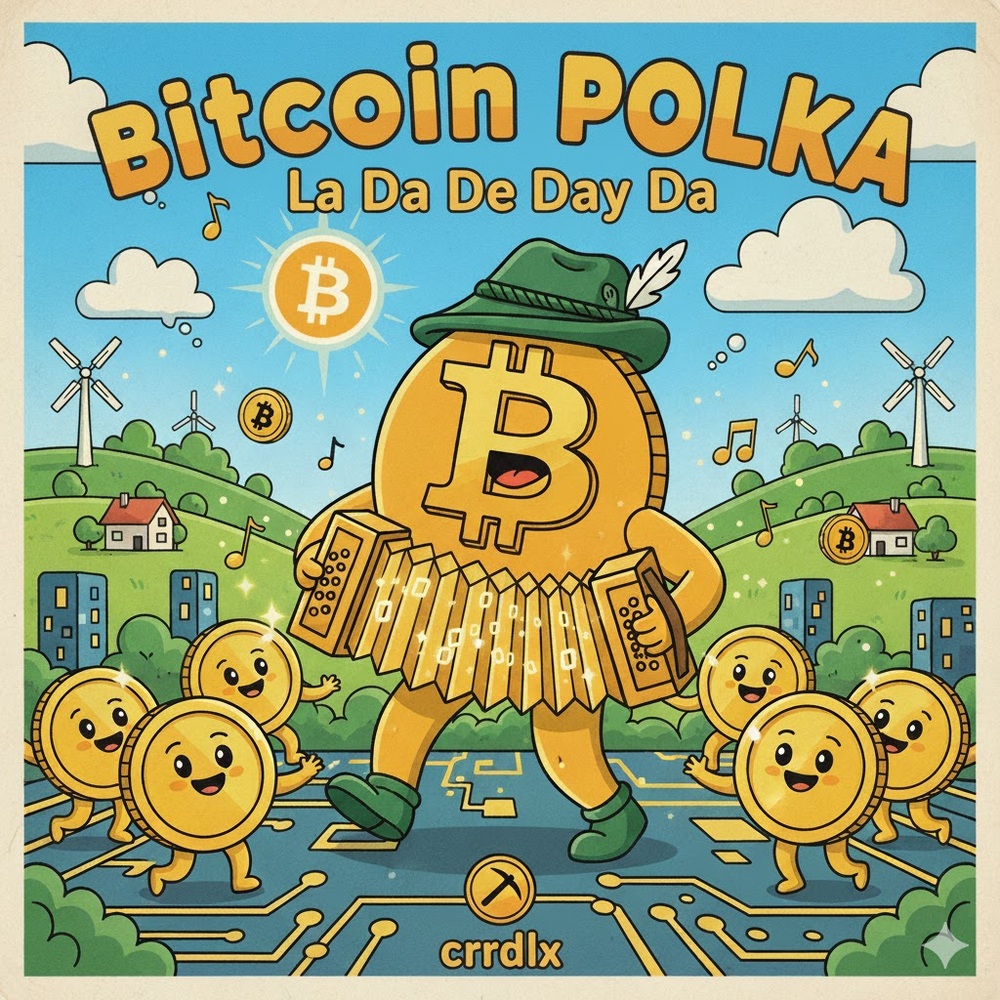

the hodl song and otherscrrdlx.vercel.app/hodlsong |
||||
| Home | Music | Original, remixes, and related tracks. | Tips | Linktree |
AKA “The Hodl Hodl Yodel Song”
I’m a hobbyist when it comes to things like cryptocurrency, mostly just fiddling and learning and enjoying the ride. You can see stuff I’ve done at hive.blog/@crrdlx/about.
Here’s the back story on this song, June 23, 2021: https://peakd.com/crypto/@crrdlx/the-hodl-song
The original version of “The Hodl Song”:
This here game ain't for the weak
I hodl and I hodel all the long day long.
Try to buy the low, try to sell the peak
I hodl and I hodel all the long day long.
When things go south you must be bold
I hodl and I hodel all the long day long.
Keep your coin and beer in the cooler cold
I hodl and I hodel all the long day long.
hodl the throttle
and hodel the yodel
hodl hodl hodl hodel-lay-tee-oh
When fomo hits, you must hold fast
I hodl and I hodel all the long day long.
or you will certainly will lose your assets
I hodl and I hodel all the long day long.
out of sight place your bags of coin
I hodl and I hodel all the long day long.
a hodl and a hodel, and the whales you'll join
I hodl and I hodel all the long day long.
Hodl the throttle
and hodel the yodel
hodl hodl hodl hodel-lay-tee-oh.
Hey!
The first four versions below were made by guerratotal, July 3, 2025, see https://stacker.news/items/1021724
Hodl Yodel (pirates singing in the ship's hold):
Hodl (pirates, after too many beers):
Pirate's Breath (the cinematic Broadway version):
Hodl Yodel 2.0 (cinematic Broadway, on ice):
Crypto Wave (The Hodl Song remix):
Longings (The Hodl Song remix featuring accordion):
Tempest Tide (The Hodl Song remix with additional lyrics):
These aren't The Hodl Song versions or remixes, but they're related.
Pirates Stacking, see source:
Yo-ho, gather round me sailors bold Stacking up them sats of gold in the hold From the crypto waves we haul them in tight Bit by bit through the day and the night No storm can shake what we got in store Stackin' higher, we're ready for more
Hodl the line, don't let it go Through the market gales will ride the flow Sats are our treasure, bright as the sun will hold I'm steady till the voyage is done Yo-ho, hodl fast, me heart is true In the world of bits we'll see it through
When the prices dip like a ship in the swell We keep on stackin', ring that old bell No sailin' out when the winds start to roar Hodl in strong on this digital shore From wallet to wallet we build our fleets That stackin' high can't be beat
But when the time comes to spend a few We'll trade them sats for what we pursue A pint in the tavern or a new set of sails Yet we save the rest for fairer tales Oh, the sea of finance is vast and wide But with sats in hand, we've got the tide
Hodl the line, don't let it go Through the market gales we'll ride the flow Sats are our treasure, bright as the sun will hold I'm steady till the voyage is done Yo-ho, hodl fast, me heart is true In the world of bits we'll see it through
Hodl the line, don't let it go Through the market gales will ride the flow Sats are our treasure, bright as the sun will hold I'm steady till the voyage is done Yo-ho, hodl fast, me heart is true In the world of bits we'll see it through
Bitcoin Polka La Da Da Lay Da, see source:

Lyrics
La-da-da-lay-da, la-da-da-lay-na, la-da-da-dee-da, la-da-dee-da-dee-la
Gather round the table, friends, with steins held high and true. Bitcoin's here to join the feast of digital brew so new. From the mines of code and bits that spark like golden foam. Raise your voice and sing along in this merry cyber home.
Oh, Bitcoin, Bitcoin, clink your coins and cheer. Like a frothy mug of beer growing year by year. Frost to the blockchain, let's all sing it loud. In the hall of bits and bytes, we're feeling proud. La-da-da-lay-da, la-da-da-lay-na, la-da-da-dee-da, la-da-da-dee-da La-da-da-dee-na, la-da-da-dee-da, la-da-da-dee-da, la-da-dee-da-la
No more heavy pockets, no more paper bills to hold. Bitcoin flows like rivers of veil in circuits bold and cold. Up and down it dances like a polka on the floor. But together we'll ride the wave and always come back for more.
Oh, Bitcoin, Bitcoin, clink your coins and cheer. Like a frothy mug of beer growing year by year. Frost to the blockchain, let's all sing it loud. In the hall of bits and bytes, we're feeling proud.
When the night grows long and the stars align so bright. Bitcoin's future gleams ahead, a beacon in the night. From the old world to the new, let's bridge the great divide. With a toast to innovation and hearts open wide.
Oh, Bitcoin, Bitcoin, clink your coins and cheer. Like a frothy mug of beer growing year by year. Frost to the blockchain, let's all sing it loud. In the hall of bits and bytes, we're feeling proud.
La-da-da-da-li-da La-da-da-da-li-na La-da-da-da La-da-da da-li-da La-da-da-da-li-da La-da-da-da-li-da La-da-da-da-li-da La-da-da-da-li da La-da-da-da-li-da La-da-da-da-li La-da-da-da-li-la
Uplift (crooner, soul style):
Bitcoin Joy (children's song):
Satoshi Sunrise (chill reggae bitcoin song):